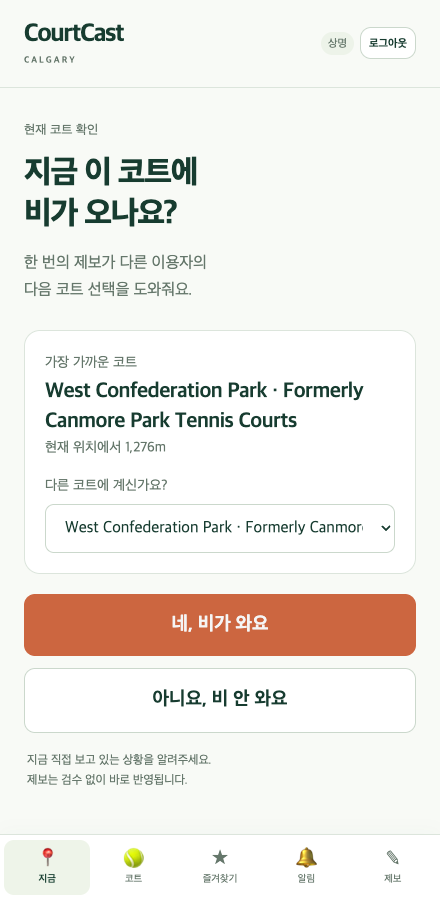
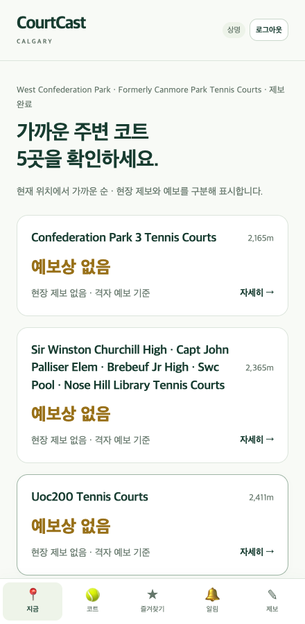
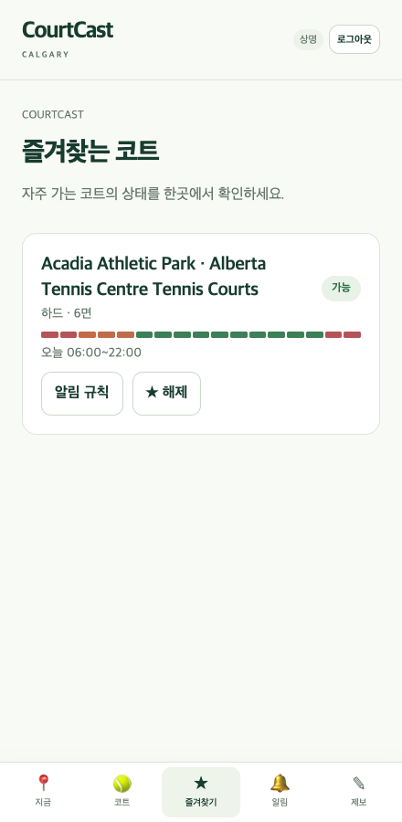

COURTCAST / SCREEN GALLERY
비가 오면, 다음 코트를 고를 수 있도록.
현재 코트의 상황을 제보하고, 가까운 코트를 비교하고, 다음 방문을 준비하는 세 가지 화면입니다.
기상 상태와 예보는 합성 데모입니다. 실제 서비스의 실시간 정보가 아닙니다.

한 번에 현장 제보
현재 코트를 확인하고 비가 오는지 제보합니다. 다음 이용자가 다른 코트를 선택할 근거를 남깁니다.

가까운 코트 비교
주변 코트 5곳을 가까운 순으로 살펴봅니다. 현장 제보와 예보를 구분해 정보의 출처를 확인합니다.

다음 방문 준비
자주 가는 코트의 상태를 모아 봅니다. 시간대별 상태와 알림 규칙을 확인하는 흐름입니다.
기존 소개 자료의 원본 화면을 정리한 정적 갤러리입니다. 화면 안의 버튼은 동작하지 않으며, 이미지를 누르면 원본으로 열립니다. 자료 범위 보기